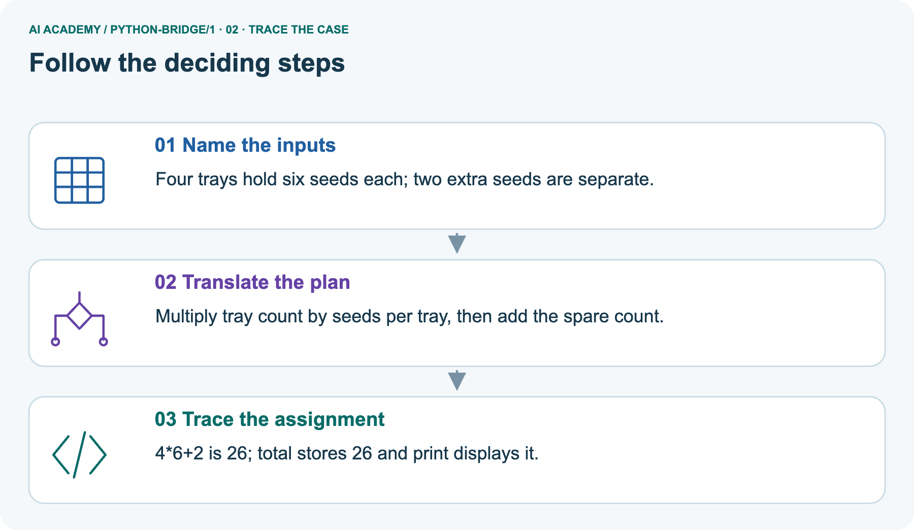
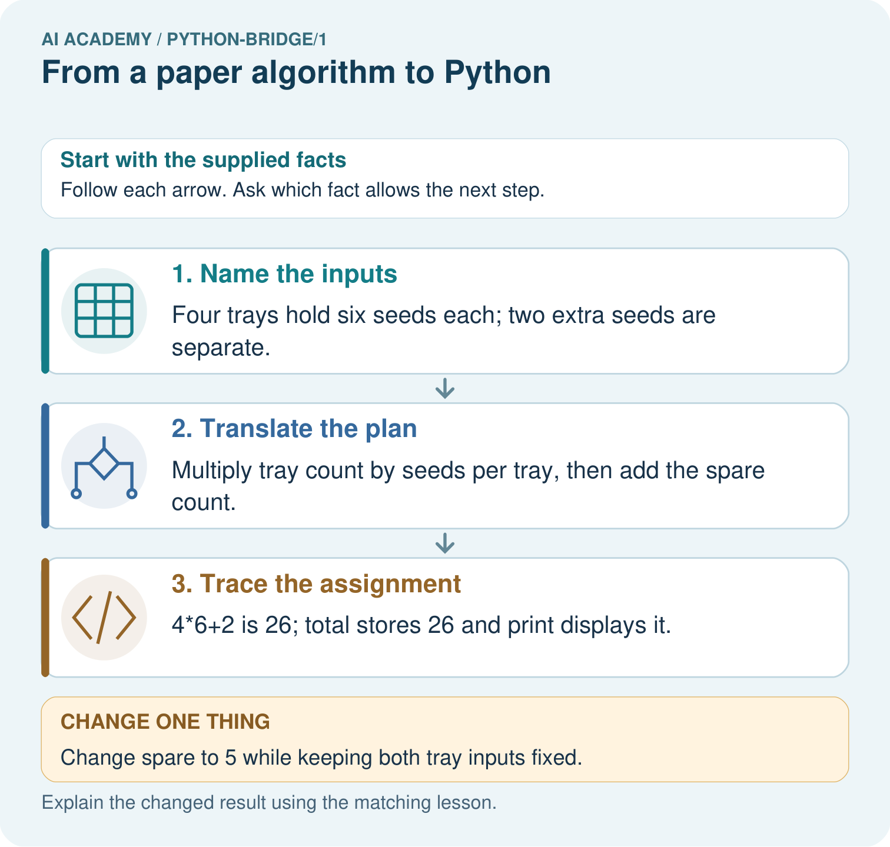
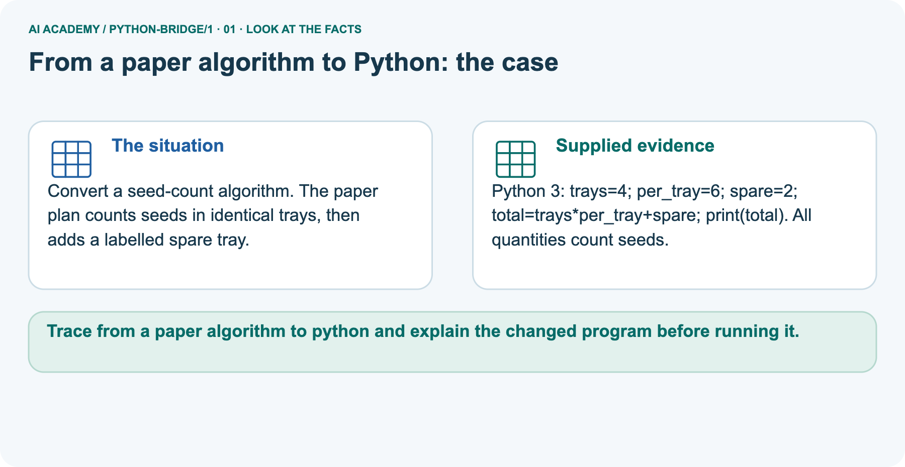
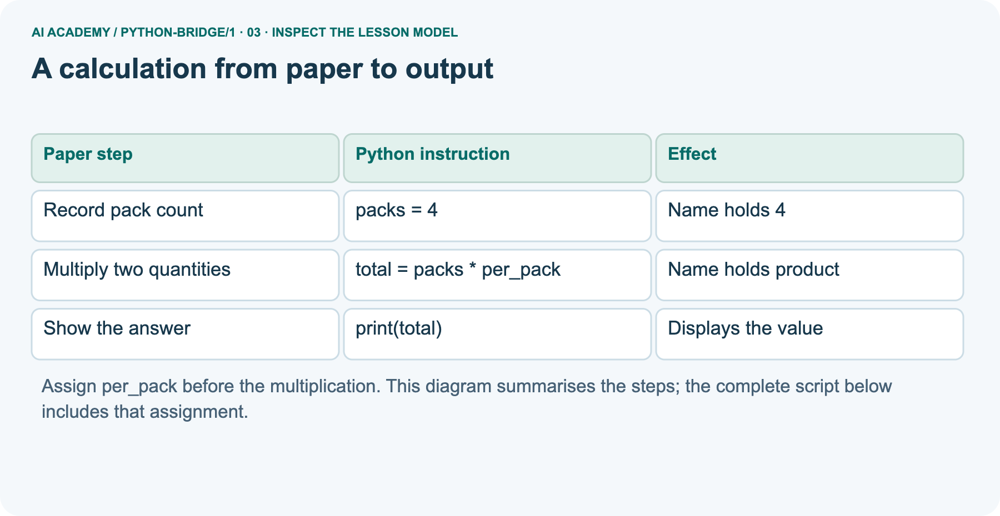
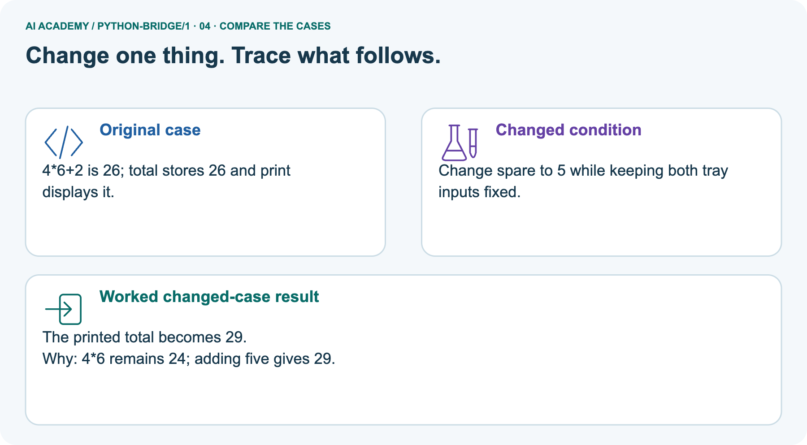
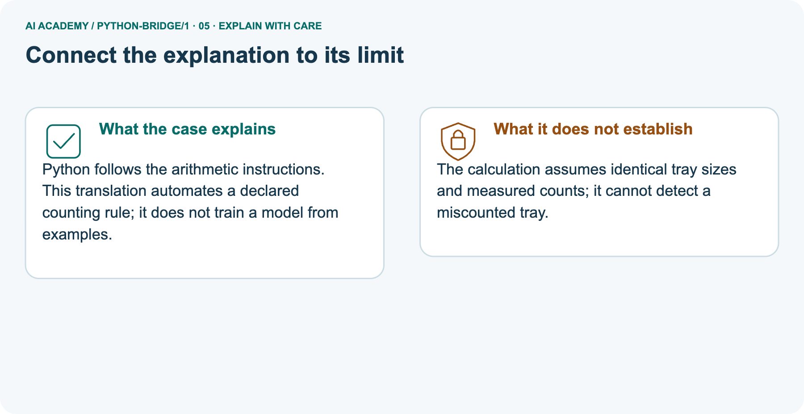
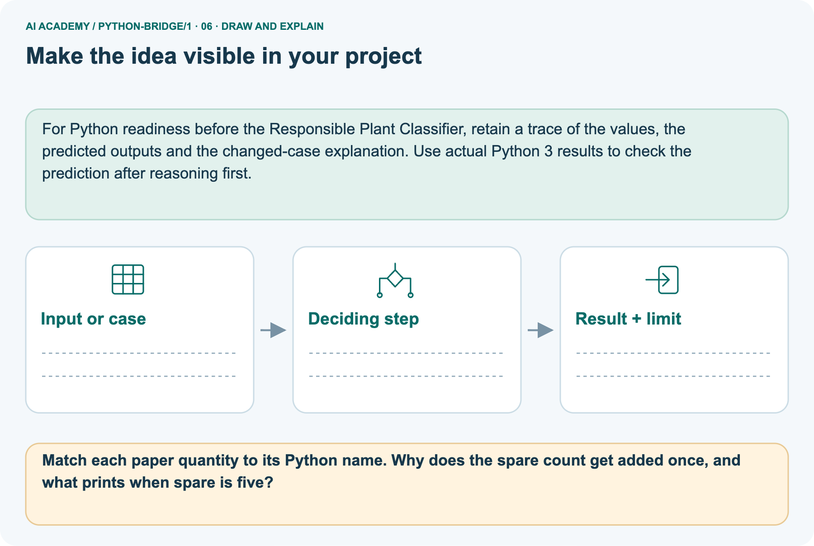

AI Academy · Python readiness bridge · Teacher guide
From a paper algorithm to Python
Learn to understand, design, build, test and explain AI systems responsibly.
Project: Python readiness portfolio
THE CONNECTED WEEK
Teach code, prediction and execution as separate records.
Model the exact statement order, preserve actual errors and use a fresh parallel case when prior exposure matters.
Keep one habit: Ask which value exists before each line and which statement produces visible output.
Main lesson · Section 1
Prepare the connected bridge lesson
Check prior exposure and keep execution practice distinct from paper reasoning.
Goal and main plan
Primary target: Translate a short paper calculation into a Python script
| Session | Sequence and minutes | Resources |
|---|---|---|
| Session 1 · Understand · 45 min | 0–7: recall and prerequisite; 7–15: inspect the concrete case and predict; 15–30: teacher models the worked trace; 30–40: learners explain a step using the text and visual; 40–45: check the core idea. | Sections 1–6; record the brief recall in the workbook. |
| Session 2 · Practise · 45 min | 0–5: retrieve the procedure; 5–15: W2 completion practice; 15–23: explain and check with a partner; 23–30: each learner answers the misconception check; 30–40: targeted reteaching or a harder variation; 40–45: prepare the investigation. | Sections 7–10; use the matching workbook W2 and misconception check. |
| Session 3 · Investigate and transfer · 45 min | 0–5: retrieve the decision rule; 5–20: investigate or trace; 20–30: start the independent case; 30–38: connect the project; 38–43: act on feedback; 43–45: plan the return check. | Use “Run the investigation”, “Connect your project”, “Show what you know”, “Study a complete case” and “Try a new case independently”. Give extra time for the full task set. If this week has a coding lab, use its named section; section numbers can change when extra explanations are included. |
This is a starting allocation of 135 minutes, not a validated duration. Preserve all named topics. Schedule extra time for connected examples, the full investigation, independent cases and project building.
Repeated copies of a case share one recorded attempt; they are not new evidence.
Case exposure check: this source example appears in ai-2/1, ai-3/23, python-bridge/1. Reuse a familiar case for recall or modelling; verify that the case used to assess transfer has not already received feedback.
Retrieval and prerequisite guidance
Four packs contain six counters each. What steps find and show the total?
Record four and six, multiply them to get 24, then display 24. The order must make the required values available before use.
This is a first encounter with saved Python scripts, not a compressed implementation of the Grade 6 adviser. Teach assignment, multiplication and print only as needed; values and types follow in Week 2.
Use a fresh run to avoid hidden interactive state. Reference: Python tutorial, An Informal Introduction to Python, https://docs.python.org/3/tutorial/introduction.html (assignment, arithmetic and print).
Materials and readiness
Teacher-prepared Python 3 editor with a new saved .py file and a visible output area; test Run before class
Paper counters or equal-group sketches and a blank expected/observed record
The printed script and workbook; no logins or personal data required
Record four and six, multiply them to get 24, then display 24. The order must make the required values available before use.
End goal
Trace from a paper algorithm to python and explain the changed program before running it.
Earlier wording, alternatives and picture transcripts
Teach the learning cycle
Retrieval answer guidance
Outcomes
Translate a short paper calculation into a Python script
Predict and explain the order of executed statements
Keep expected and observed output separate when checking a program
Preparation
Prerequisite answer
End goal for the pictorial case
This added worked case illustrates the week’s main idea. Retain all original and connected topics; schedule its practice within the teaching cycle.
Main lesson · Section 2
Model values and displayed output as different things
Keep the packing warm-up and spare-seed example explicitly labelled.
Prepare the script environment
In Grade 6 you traced rules on paper. Now you will write a small Python program and check what it actually does. Begin with a counter-packing calculation, not the whole activity adviser.
The requirement is to find the total counters in equal packs and display that total. For this first program, the supplied quantities are whole, nonnegative numbers; it does not yet validate typed input.
Use a teacher-prepared Python 3 editor that can run a saved .py file. Open a new file called counters.py, type the code exactly as shown in the next section, save it, and use the editor’s Run command.
Read the output area separately from the source editor. No account, AI tool, package installation or personal data is needed. If a device is unavailable, trace on paper and label the result predicted rather than executed.
Model four-line packing code and value trace
packs = 4
per_pack = 6
total = packs * per_pack
print(total)| Statement | Value after it runs | Visible output |
|---|---|---|
| packs = 4 | packs holds 4 | Nothing yet |
| per_pack = 6 | per_pack holds 6 | Nothing yet |
| total = packs * per_pack | total holds 24 | Nothing yet |
| print(total) | Stored values unchanged | 24 on its own line |
Read the script from top to bottom. The equals sign assigns the value on its right to the name on its left. The star means multiplication. print(total) displays the value of total; it does not display the letters in the name.
Type ordinary straight characters and keep the parentheses. The Python prompt symbols >>> are not part of this saved script.
Collect prediction versus observed output
| After line | Names and values | Displayed output |
|---|---|---|
| packs = 4 | packs is 4 | Nothing yet |
| per_pack = 6 | packs is 4; per_pack is 6 | Nothing yet |
| total = packs * per_pack | total is 24 | Nothing yet |
| print(total) | Values are unchanged | 24 |
Write 24 as the expected output before running. Then copy the actual output into a separate column. A matching result supports this case, not every possible input.
A saved file may contain an old edit: save again and rerun the whole script. Do not type the expected number into the output record without running.
Read the complete seed task
Convert a seed-count algorithm. The paper plan counts seeds in identical trays, then adds a labelled spare tray.
Python 3: trays=4; per_tray=6; spare=2; total=trays*per_tray+spare; print(total). All quantities count seeds.
Trace seed quantities and add spare once



Read the picture one step at a time
Python follows the arithmetic instructions. This translation automates a declared counting rule; it does not train a model from examples.
trays = 4
per_tray = 6
spare = 2
total = trays * per_tray + spare
print(total)
Predict changing only spare
Change: Change spare to 5 while keeping both tray inputs fixed.
Prediction: The printed total becomes 29.
Reason: 4*6 remains 24; adding five gives 29.
State assumptions and picture limits
The calculation assumes identical tray sizes and measured counts; it cannot detect a miscounted tray.
Cover the result. Ask learners to name the inputs and predict the next step. Uncover one step, connect the icon to the actual procedure, and explain its evidence. Then change the supplied condition and compare.
The picture is a representation; it does not document execution of a real AI model.
Additional guided key
The third line assigns total but does not call print, so nothing is displayed. A first-line print(total) raises NameError in a fresh run because total has not been assigned.
Exit: 11 is wrong for five groups of six; addition is a likely cause, and multiplication should give 30. Retain the old result and check the repaired file with both pack counts. Record whether the work was executed or traced.
Earlier wording, alternatives and picture transcripts
| Term | Meaning |
|---|---|
| Algorithm | An ordered procedure for solving a stated problem |
| Program | Instructions written in a language a computer can execute |
| Interpreter | Software that executes Python instructions |
| Assignment | Binding a name to the value of an expression |
| Output | Information a program displays or returns |
A calculation from paper to output
Model the reasoning aloud
Use the complete worked example below before asking learners to complete W2. Reveal a small part, invite a prediction, then explain the deciding step.
These teacher notes contain solutions; do not reveal the independent case answer during modelling.
| Thinking move | Teacher prompt |
|---|---|
| Plan | What is given? What is the question? Which procedure fits these facts? |
| Do | Point to each input and intermediate step in the worked trace. Name the rule that allows the next step. |
| Check | Does the output answer the question? Which assumption or limitation prevents a larger claim? |
Use the diagram and verbal explanation together. Ask learners to match a sentence to a specific visual step; do not assign learners fixed visual or auditory learning styles.
A pictorial worked case: From a paper algorithm to Python
The facts we will use



Why this result follows
What this example does not establish
Change one thing in the pictured case
Ask while showing the picture
Main lesson · Section 3
Guide the trace, then fade the help
Collect predictions before execution or feedback.
Main completion task and key
Completion task: Make records for 4 packs of 6, then 5 packs of 6. Predict before running. Record actual output, any error and what changed. If working on paper, label both results as traces.
Teacher check: Expected 24 then 30. Accept actual errors with an accurate account; do not replace observations. Record the changed pack count, saved file and run or trace status.
Two matching cases do not show all inputs are handled.
Start by identifying the given inputs together. Leave the intermediate steps blank. If needed, model one step, then withdraw that help on the next step. Move to a full trace only when the partial trace is understood.
For partners, alternate explainer and checker; collect a response from every learner before discussion.
Individual misconception check
Use the worked case for From a paper algorithm to Python. Proposed explanation: “An equals sign displays the answer”. Decide whether this explanation is supported.
Point to the step or supplied fact that decides; explain your repair if needed.
Expected correction: Assignment binds a name; print produces the displayed output.
Collect explanations, not only yes/no votes. If a misunderstanding is common, re-model the relevant step for the class.
If it affects a few learners, give a short targeted group explanation while others solve a more demanding variation.
Pictorial question and changed-case key
Match each paper quantity to its Python name. Why does the spare count get added once, and what prints when spare is five?
The names map trays→4, per_tray→6 and spare→2. The spare count is outside the identical trays, so total is 24+2=26. With spare=5, print displays 29.
Changed-case reasoning: The printed total becomes 29. 4*6 remains 24; adding five gives 29.
Collect each learner’s explanation before discussion. Use the first missing connection between input, deciding step and result to choose support. This question is worked-case practice, not fresh mastery evidence.
Support and alternative plan
| Time or stage | Teacher action |
|---|---|
| Session 1 start to 7 minutes | Retrieve equal-group multiplication and collect the prerequisite explanation. |
| 7 to 20 minutes | Model source versus output, save counters.py and translate each paper step with the diagram. |
| 20 to 33 minutes | Complete W1 and predict the trace before running the four-line program. |
| 33 to 45 minutes | Start W2 and distinguish observation from the expected answer; record device access. |
| Session 2 start to 8 minutes | Rerun with five packs and compare the two records. |
| 8 to 20 minutes | Use W3 and the guided question to diagnose a first-line print in a fresh run. |
| 20 to 35 minutes | Collect W4 independently before hints; observe whether each pupil can explain zero trays. |
| 35 to 45 minutes | Complete W5 and the exit. Save source and records; identify pupils needing editor support. |
Use the worked example in Sections 3 and 6. Collect a prediction before revealing its result; ask the learner to point to each intermediate fact.
Offer four separate line cards, a source/output label and a multiplication sketch. Allow a paper trace when devices are unavailable, with execution practice still pending.
Do not supply the independent transfer numbers’ answers. Extension: explain why a plus-sign version can accidentally agree with multiplication for two packs of two, and why one passing example is weak evidence.
Earlier wording, alternatives and picture transcripts
Compact alternative: this two-session sequence covers selected core tasks. Use the three-session weekly plan for the full lesson, independent transfer, feedback and project work; allow extra time for extensions.
Reduce help deliberately
Individual reasoning check
Pictorial practice question
Reasoned teacher answer
Main lesson · Section 4
Run the complete supplied investigation
Preserve expected, observed and paper-trace records.
Supplied case materials and checked guidance
Five packing/order cases: A 24, B 30, C 0; D fresh first-line print(total) raises NameError; E addition gives 11 and fails equal-group requirement despite running. Seed script 26, changed spare 29. Selected independent task 3*7=21 then 5*7=35; explain written multiplication and distinguish changed input from training. Earlier shelf task has its own zero-trays variant and is additional practice.
Record exposure to repeated examples and use unseen parallel counts for an independent reassessment.
Diagnose misconceptions
An equals sign displays the answer: Assignment binds a name; print produces the displayed output.
A successful run means the requirement was met: Compare the output with the paper rule and expected result.
Python guesses the intended order: A name must be assigned before this script reads it.
Typing a program trains an AI model: These statements apply an explicit multiplication rule.
Use Section 9 for the evidence ledger. Add a boundary or missing-input case and record the expected response before checking. More successful repeats of one case do not establish wider coverage.
Choose accessible support
| What the response shows | Next teaching action |
|---|---|
| Missing or misread facts | Read the case aloud, mark supplied versus unknown facts, and let the learner restate it. |
| Wrong procedure | Return to the deciding step in the worked case. Contrast it with the proposed incorrect explanation. |
| Arithmetic or implementation error | Trace intermediate values or lines; preserve the first mismatch and retry that step. |
| Correct result without a reason | Ask for a trace and a changed case before marking independent understanding. |
| An unsupported wider claim | Ask which supplied evidence supports the claim and which further observation would be needed. |
Offer an oral explanation, drawing, enlarged visual or fewer examples when that removes a reading/writing barrier. Keep the same reasoning goal.
Stretch secure learners by changing a boundary or assumption and asking them to defend the effect, not simply by assigning more of the same questions.
Earlier wording, alternatives and picture transcripts
Match the support to the first error
Main lesson · Section 5
Assess the selected bridge transfer task
If a learner has seen this exact case, use a fresh parallel input and record exposure/support.
Selected independent task and checked key
Selected case: Predict the printed value. Change only packs to 5 and predict again. Explain which statements apply a written rule.
packs = 3
per_pack = 7
total = packs * per_pack
print(total)
21, then 35. The multiplication rule is written; changing an input is not fitting an AI model.
Judge trace and support
| Dimension | Evidence required |
|---|---|
| Explanation | Names the applicable idea or procedure and ties it to the supplied facts. |
| Trace and result | Preserves the given inputs and shows the relevant intermediate steps; distinguishes a prediction from an observed execution. |
| Limits | States the assumptions, missing evidence or conditions under which the result would change. |
Record each dimension as not yet, with support, or independent. Accept a valid alternative procedure with a defensible trace.
Do not penalise an honestly recorded model failure if the learner correctly explains its evidence and limits.
Give one repair action
Name the earliest unsupported step and give one action to repair it. Have the learner make that repair now and explain why. Then assess the relevant skill on a fresh, fully specified case.
Confirm it was not previously practised with feedback; solve and check the new case before assigning it. A follow-up design prompt is a starting brief, not automatically an equivalent test.
W1 Connect the paper steps to Python
Write the complete four-line script for 4 packs of 6. Beside each line explain what it does. Which line displays information?
packs = 4; per_pack = 6; total = packs * per_pack; print(total), each on its own line. The first two bind quantities, the third computes 24 and the fourth displays 24.
Assignment alone produces no displayed output in this script.
W2 Predict then observe
Make records for 4 packs of 6, then 5 packs of 6. Predict before running. Record actual output, any error and what changed. If working on paper, label both results as traces.
Expected 24 then 30. Accept actual errors with an accurate account; do not replace observations. Record the changed pack count, saved file and run or trace status. Two matching cases do not show all inputs are handled.
W3 Explain an order error
Move print(total) to the first line of a fresh script. Predict what happens and why. Put the lines back into an order that meets the requirement.
The first line tries to read total before it exists, causing NameError in a fresh run. Assign packs and per_pack, calculate total, then print it.
Earlier values lingering in an interactive session can hide the problem; run the complete saved script afresh.
W5 Keep an honest conclusion
Explain the difference between a successful run and a correct calculation. State one limit of this program and what you would keep so another person can check your work.
A successful run means the execution finished without a reported error; correctness requires matching the stated total-count rule. The script assumes supplied whole nonnegative quantities and does not validate arbitrary input.
Keep source, quantities, expected and actual output and whether it was run or traced.
Earlier wording, alternatives and picture transcripts
Guided and exit questions
The third line assigns total but does not call print, so nothing is displayed. A first-line print(total) raises NameError in a fresh run because total has not been assigned.
Exit: 11 is wrong for five groups of six; addition is a likely cause, and multiplication should give 30. Retain the old result and check the repaired file with both pack counts. Record whether the work was executed or traced.
W1 Connect the paper steps to Python
W2 Predict then observe
W3 Explain an order error
W4 Transfer the procedure independently
A fictional shelf has 3 trays of 7 tiles each. Write a four-line Python script using trays, per_tray and tiles. Predict its output. Then change only trays to 0 and predict again. Explain why adding the two quantities is wrong.
trays = 3; per_tray = 7; tiles = trays * per_tray; print(tiles), on separate lines. Outputs 21 and then 0. Zero trays contain zero tiles. Addition would give 10 then 7, not the number in equal groups.
W5 Keep an honest conclusion
Independent assessment and fresh retry
W4 must give a complete ordered script and explain outputs 21 and 0 using equal groups. Distinguish an independent paper trace from successful use of the editor; record both skills separately.
After support, retry with 2 boxes of 9 pencils, then 0 boxes: 18 and 0. Ask for the print line and why it follows the calculation.
Assess independent transfer
Selected case answer
Feedback that the learner uses
Main lesson · Section 6
Keep the portfolio, support and delayed check
Track code execution separately from a correct paper trace.
Project evidence
Add a labelled from a paper algorithm to python evidence sheet to Python readiness portfolio. Show how you can translate a short paper calculation into a python script.
Use the supplied fictional case and keep its inputs, intermediate steps, calculation or prediction, and limitation. Connect this record to last week’s record; a matching answer without a trace is insufficient.
For Python readiness before the Responsible Plant Classifier, retain a trace of the values, the predicted outputs and the changed-case explanation. Use actual Python 3 results to check the prediction after reasoning first.
Support and selected assessment guidance
Offer four separate line cards, a source/output label and a multiplication sketch. Allow a paper trace when devices are unavailable, with execution practice still pending.
Do not supply the independent transfer numbers’ answers. Extension: explain why a plus-sign version can accidentally agree with multiplication for two packs of two, and why one passing example is weak evidence.
Selected independent answer: 21, then 35. The multiplication rule is written; changing an input is not fitting an AI model. Keep earlier W4 transfer as additional practice; do not substitute its numbers or key for this selected task. Record prior exposure and use a fresh parallel case after support.
Delayed return
Suggested return points in this level: python-bridge/2, python-bridge/4, python-bridge/7. Use actual classroom dates, adjusting for holidays and gaps.
One, three and six teaching weeks are scheduling choices, not a claimed optimal spacing.
At a delayed check, ask for the idea from memory and a changed application. Compare with the earlier independent response and record support used.
For a new level, revisit the previous capstone before checking the new prerequisites.
| Record | Teacher evidence |
|---|---|
| Learner code and date | |
| Concept and case used; prior exposure | |
| Explanation / trace / limits | |
| Support and first repair | |
| Changed case and delayed outcome | |
| Next teaching action |
Use the evidence to choose reteaching or the next step. A completed page, confidence rating or attractive project does not by itself demonstrate understanding.
Bridge to the next topic
Week 2 studies values, variable names and types, including the difference between numeric data and text.
Retain the project ledger and assess a changed case after support. Check the relevant prerequisite before carrying this component forward.
Earlier wording, alternatives and picture transcripts
Plan the delayed return
Project evidence from this case
Reference bank and extra practice
Choose the reference that helps your next step.
Reference · Alternative planning checklist
Reference · Section 7
Reference · Alternative planning checklist
Use alongside the main route without repeating the teaching cycle.
Planning and assessment reference
Teaching target: Translate a short paper calculation into a Python script
Prepare the labelled worked-case picture, the matching workbook, fictional input cards and a place for individual responses. Check a local Python 3 environment before class; have a paper-trace version ready.
| Session | Plan | Resources |
|---|---|---|
| Session 1 · Understand · 45 min | 0–7: recall and prerequisite; 7–15: inspect the concrete case and predict; 15–30: teacher models the worked trace; 30–40: learners explain a step using the text and visual; 40–45: check the core idea. | Sections 1–6; record the brief recall in the workbook. |
| Session 2 · Practise · 45 min | 0–5: retrieve the procedure; 5–15: W2 completion practice; 15–23: explain and check with a partner; 23–30: each learner answers the misconception check; 30–40: targeted reteaching or a harder variation; 40–45: prepare the investigation. | Sections 7–10; use the matching workbook W2 and misconception check. |
| Session 3 · Investigate and transfer · 45 min | 0–5: retrieve the decision rule; 5–20: investigate or trace; 20–30: start the independent case; 30–38: connect the project; 38–43: act on feedback; 43–45: plan the return check. | Use “Run the investigation”, “Connect your project”, “Show what you know”, “Study a complete case” and “Try a new case independently”. Give extra time for the full task set. If this week has a coding lab, use its named section; section numbers can change when extra explanations are included. |
Before class, solve the supported practice: Make records for 4 packs of 6, then 5 packs of 6. Predict before running. Record actual output, any error and what changed. If working on paper, label both results as traces.
Reasoned practice answer: Expected 24 then 30. Accept actual errors with an accurate account; do not replace observations. Record the changed pack count, saved file and run or trace status.
Two matching cases do not show all inputs are handled.
Check every learner before discussion: Use the worked case for From a paper algorithm to Python. Proposed explanation: “An equals sign displays the answer”. Decide whether this explanation is supported.
Point to the step or supplied fact that decides; explain your repair if needed.
Misconception repair: Assignment binds a name; print produces the displayed output.
Support: read the exact case aloud, enlarge the labelled picture, supply input cards and model only the first deciding step. Accept a spoken explanation or drawing; retain the reasoning goal.
Extension: Change spare to 5 while keeping both tray inputs fixed. Require a prediction and a reason before comparing. Expected result: The printed total becomes 29. Reason: 4*6 remains 24; adding five gives 29.
Independent assessment: withhold the reserved answer until the learner has attempted the new case. Record support separately from correctness.
| Criterion | Not yet | With support | Independent |
|---|---|---|---|
| Explanation | Names an answer without a deciding fact | Uses a hint to link fact and decision | Explains the deciding fact in own words |
| Trace or test | Cannot connect input and result | Completes steps with prompts | Traces or tests a changed case accurately |
| Limits and revision | Claims more than evidence supports | Names a limit after a prompt | States a defensible limit and useful next test |
Project checkpoint: Python readiness portfolio. Keep runnable code, predictions, actual outputs, one repaired error and an explanation of a function on changed inputs.
Use the weekly teacher answer for topic-specific reasoning. A saved progress tick is an activity record; judge mastery from the learner’s explanation and evidence.
Reference · Feedback and evidence records
Reference · Section 8
Reference · Feedback and evidence records
Keep individual first attempts separate from supported rehearsal.
Feedback and repair
Use the two formative questions as supported practice, not as independent mastery scores. Discuss the deciding evidence rather than accepting a guessed selection.
The feedback comes from the reviewed public worked case. Do not reveal the separately reserved independent teacher answer until the learner has attempted that case.
Ask students to predict before running code. Preserve errors and actual outputs; collect a changed test and an explanation. The branch-boundary and indexing lessons deliberately include failure cases.
Use the earlier worked-explanation links to address a specific missing building block, then return to the current question. Adapt this suggestion after observing the learner; it is not an automatic diagnosis.
Collect the completed-work portfolio as evidence. Record support separately from correctness, and assess explanation, trace/test and limitations. Progress ticks and quiz selections alone do not establish mastery.
Reference · Teach with the six pictures
Reference · Section 9
Reference · Teach with the six pictures
Use the relevant picture for a specific reasoning move.
01. From a paper algorithm to Python: the case



Convert a seed-count algorithm. The paper plan counts seeds in identical trays, then adds a labelled spare tray. Supplied facts: Python 3: trays=4; per_tray=6; spare=2; total=trays*per_tray+spare; print(total).
All quantities count seeds.
Point to the given fact that matters most. Explain why it matters.
Teacher prompt: Point to the given fact that matters most. Explain why it matters. Ask learners to describe one label or arrow in ordinary words. Use the adjacent transcript if the image is difficult to see.
02. Follow the deciding steps
Name the inputs: Four trays hold six seeds each; two extra seeds are separate. → Translate the plan: Multiply tray count by seeds per tray, then add the spare count. → Trace the assignment: 4*6+2 is 26; total stores 26 and print displays it.
Point to each numbered stage and explain which recorded input it uses.
Teacher prompt: Point to each numbered stage and explain which recorded input it uses. Ask learners to describe one label or arrow in ordinary words. Use the adjacent transcript if the image is difficult to see.
03. A calculation from paper to output



A calculation from paper to output. Record pack count | packs = 4 | Name holds 4. Multiply two quantities | total = packs * per_pack | Name holds product. Show the answer | print(total) | Displays the value
Read the labels and values. Explain the relationship the model shows.
Teacher prompt: Read the labels and values. Explain the relationship the model shows. Ask learners to describe one label or arrow in ordinary words. Use the adjacent transcript if the image is difficult to see.
04. Change one thing. Trace what follows.



Original case: 4*6+2 is 26; total stores 26 and print displays it. Changed condition: Change spare to 5 while keeping both tray inputs fixed. Expected result: The printed total becomes 29.
Reason: 4*6 remains 24; adding five gives 29.
Predict before checking the worked changed-case result. Name what changed and what the supplied facts allow you to conclude.
Teacher prompt: Predict before checking the worked changed-case result. Name what changed and what the supplied facts allow you to conclude. Ask learners to describe one label or arrow in ordinary words.
Use the adjacent transcript if the image is difficult to see. Changed-case reasoning: 4*6 remains 24; adding five gives 29.
05. Connect the explanation to its limit



Python follows the arithmetic instructions. This translation automates a declared counting rule; it does not train a model from examples.
Limit: The calculation assumes identical tray sizes and measured counts; it cannot detect a miscounted tray.
Explain the case, then point to a limit on the claim.
Teacher prompt: Explain the case, then point to a limit on the claim. Ask learners to describe one label or arrow in ordinary words. Use the adjacent transcript if the image is difficult to see.
Keep the stated scope: The calculation assumes identical tray sizes and measured counts; it cannot detect a miscounted tray.
06. Make the idea visible in your project



For Python readiness before the Responsible Plant Classifier, retain a trace of the values, the predicted outputs and the changed-case explanation. Use actual Python 3 results to check the prediction after reasoning first.
Draw your input, deciding step, result and limit. Supported question: Match each paper quantity to its Python name. Why does the spare count get added once, and what prints when spare is five?
Draw your project trace and justify the deciding step using evidence.
Teacher prompt: Draw your project trace and justify the deciding step using evidence. Ask learners to describe one label or arrow in ordinary words. Use the adjacent transcript if the image is difficult to see.
Supported practice key: The names map trays→4, per_tray→6 and spare→2. The spare count is outside the identical trays, so total is 24+2=26. With spare=5, print displays 29.
Earlier wording, alternatives and picture transcripts
Use one picture at a time. Hide a worked result before asking for a prediction, then reveal it for feedback. These are supported teaching cases; retain the separate independent assessment for a fresh first attempt.